<!DOCTYPE html>
<html lang="en_UK>
<head>

<meta name="google-site-verification" content="ybpGqW0Fo_7szeqYJRGTEy5kT5kZ8lEbx6AOJtoyaj8" />

<meta charset="UTF-8">
<meta name="viewport" content="width=device-width, initial-scale=1">

<title>Joshua Wrigley</title>

<style>

body {font-family: Georgia, serif; padding: 30px; text-align: center; background: honeydew;}

.contentbox {padding: 30px; background: lightcyan;}

button {
    font-family: Georgia, serif;
}


/* The header */

.textbox {margin: auto; text-align: justify; width: 50vw;}

.flex-container-header {
  display: flex;
  align-items: stretch;
  flex-wrap: wrap;
}

.flex-container-header-subdiv {
  flex: 20%;
  text-align: justify;
}

.portrait {
  flex: 20%;
  min-width: 100px;
  padding: 10px;
  margin: 5px;
}


/* The main body */

.flex-container {
  display: flex;
  align-items: stretch;
  background-color: gainsboro;
  flex-wrap: wrap;
  padding:5px;
}

.button-group {
  display: flex;
  flex-wrap: wrap;
  width: 100%;
  justify-content: left;
}

@media (max-width: 520px) {
  .button-group {
    flex-direction: column; /* Stacks buttons vertically on small screens */
    align-items: stretch;   /* Stretches buttons to equal width if desired */
  }
}

.flex-container-pub {
  background-color: darkseagreen;
  color: white;
  flex: 20%;
  text-align: justify;
  min-width: 100px;
  max-width: 400px;
  padding: 10px;
  margin: 5px;
}

.flex-container-pub.collapsed {
            display: none;
        }

.flex-container-unpub {
  background-color: cadetblue;
  color: white;
  flex: 20%;
  text-align: justify;
  min-width: 100px;
  max-width: 400px;
  padding: 10px;
  margin: 5px;
}

.flex-container-unpub.collapsed {
            display: none;
        }

.flex-container-phd {
  background-color: seagreen;
  color: white;
  flex: 20%;
  text-align: justify;
  min-width: 100px;
  max-width: 400px;
  padding: 10px;
  margin: 5px;
}

.flex-container-phd.collapsed {
            display: none;
        }

/* Toggle content */

.toggle-btn {
            background-color: grey;
            color: white;
            border: none;
            padding: 10px;
	    margin: 5px;
            cursor: pointer;
            transition: background-color 0.3s ease, transform 0.1s ease;
        }
        .toggle-btn:hover {
            background-color: darkgrey;
        }
	.toggle-btn.active {
            background-color: gainsboro;
        }
        
.toggle-btn.active:hover {
            background-color: darkgrey;
        }


p a:link {color: inherit; text-decoration: none;}
p a:visited {color: inherit; text-decoration: none;}
p a:hover {color: inherit; text-decoration: underline;}


</style>
</head>
<body>

<div class="contentbox">
	<h1 style="font-size: min(8vw,40pt);">Joshua L. Wrigley</h1>
	
	<div class="textbox">


	<! ---- Header ---- >
	<div class="flex-container-header">

	<div class="flex-container-header-subdiv">
	<p>I am a logician and category theorist, specialising in topos theory.  I am currently a Marie Skłodowska-Curie postdoctoral fellow at Masarykova Univerzita, working with <a href="https://www.math.muni.cz/~bourkej/" target="_blank">John Bourke</a> on my project <i>HiDimAFOL (Higher Dimensional Aspects of First Order Logic)</i>. 

	<p>Previously, I was a post-doc at Université Paris Cité, working with <a href="https://samvangool.net/" target="_blank">Sam van Gool</a>, and at Queen Mary University of London, working with <a href="https://webspace.maths.qmul.ac.uk/i.tomasic/" target="_blank">Ivan Tomašić</a>.  Before that, I completed my PhD under the supervision of <a href="https://www.oliviacaramello.com/" target="_blank">Olivia Caramello</a> at the University of Insubria.

	<p>My research involves the interaction between mathematical logic, topology, and category theory.  I am especially interested in topos-theoretic approaches to model theory.</p>

	<p>E-mail: <a href="mailto:wrigley@math.muni.cz">wrigley@math.muni.cz</a>.
	<br>
	<!--
	My CV is available <a href="CV/CV-Wrigley.pdf" target= "_blank" title="An academic CV.">here</a>.
-->
	</p>
	</div>

	<div class="portrait">
	<a href="Images/portraitLarge.png" target="_blank">
	
	</a>
	</div>

	</div>
</div>


<div class="flex-container">

<div class="button-group">

<button class="toggle-btn" id="collapsepub">
<span style="display: inline-block; width: 12px; height: 12px; background-color: darkseagreen; margin-right: 4px;"></span>
<b>Publications</b>
</button>

<button class="toggle-btn" id="collapseunpub">
<span style="display: inline-block; width: 12px; height: 12px; background-color: cadetblue; margin-right: 4px;"></span>
<b>Preprints</b>
</button>

<button class="toggle-btn" id="collapsephd">
<span style="display: inline-block; width: 12px; height: 12px; background-color: seagreen; margin-right: 4px;"></span>
<b>PhD thesis</b>
</button>

</div>

<div class="flex-container-unpub">
	<a href="https://arxiv.org/abs/2606.28736" target="_blank">
	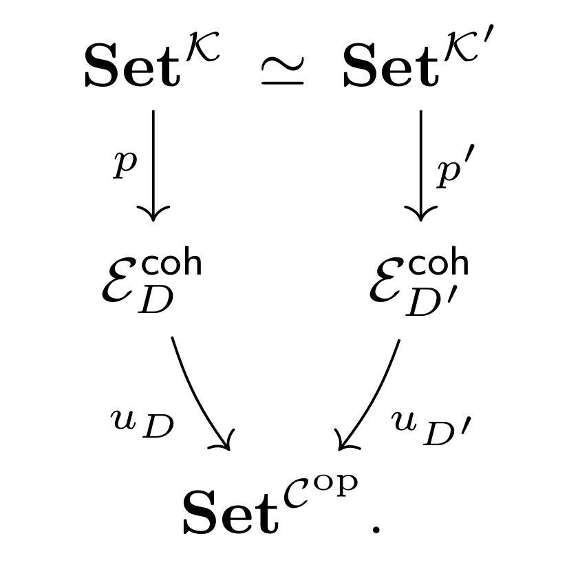
	</a>
	<p><a href="https://arxiv.org/abs/2606.28736" target="_blank" title="arXiv:2606.28736"><b>The points of canonical extensions of doctrines,</b></a>
	with Sam van Gool, Preprint (2026).</p>
</div>


<div class="flex-container-unpub">
	<a href="https://arxiv.org/abs/2606.21273" target="_blank">
	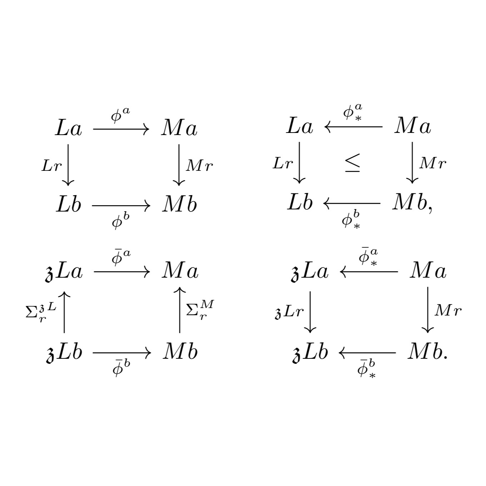
	</a>
	<p><a href="https://arxiv.org/abs/2606.21273" target="_blank" title="arXiv:2606.21273"><b>Locales in presheaf toposes vs. presheaves of locales,</b></a>
	with Vasileios Aravantinos-Sotiropoulos and Panagis Karazeris, Preprint (2026).</p>
</div>


<div class="flex-container-unpub">
	<a href="https://arxiv.org/abs/2605.20407" target="_blank">
	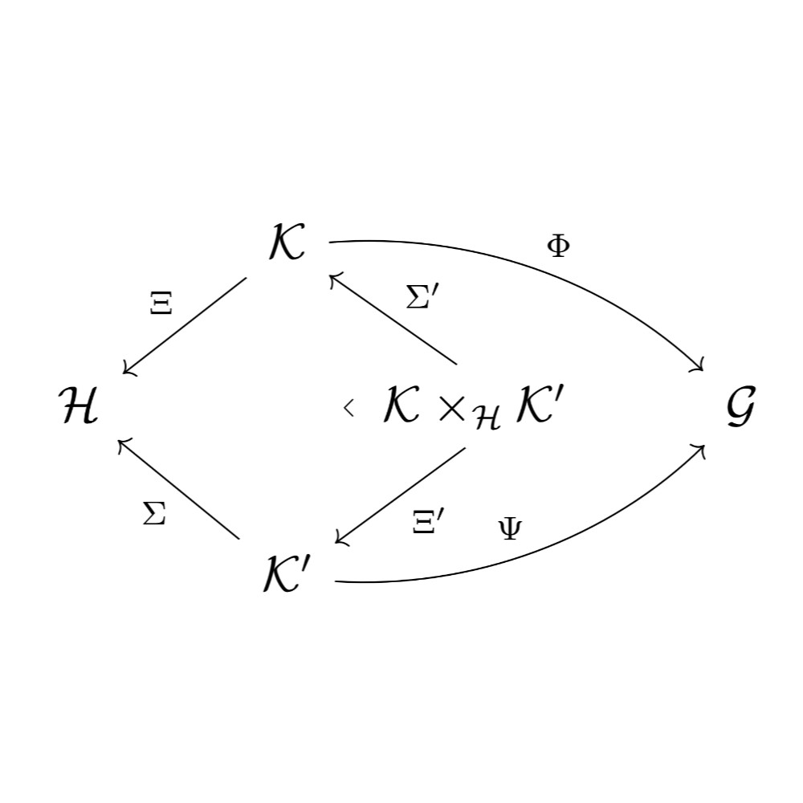
	</a>
	<p><a href="https://arxiv.org/abs/2605.20407" target="_blank" title="arXiv:2507.04526"><b>Generic bundles over a localic category,</b></a>
	with Graham Manuell, Preprint (2026).</p>
</div>

<div class="flex-container-pub">
	<a href="http://www.tac.mta.ca/tac/volumes/45/23/45-23abs.html" target="_blank">
	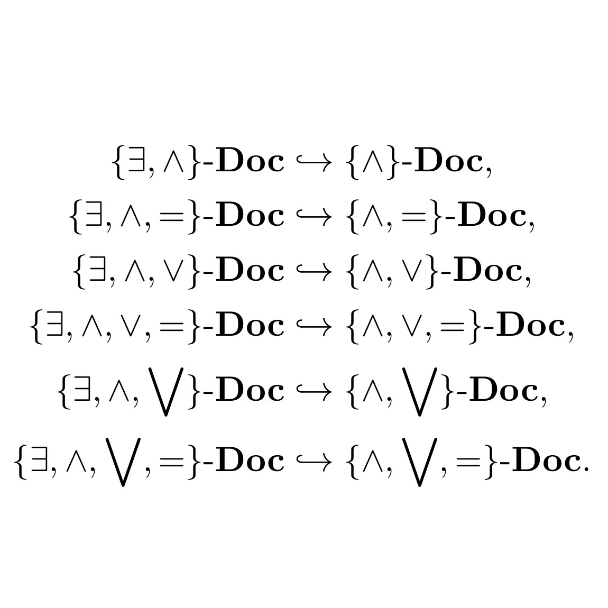
	</a>
	<p><a href="http://www.tac.mta.ca/tac/volumes/45/23/45-23abs.html" target="_blank" title="Link to TAC"><b>Existential completions and Herbrand's theorem,</b></a>
	<i>Theory and Applications of Categories</i>, Vol. 45, No. 23, pp. 924-950 (2026).</p>
</div>

<div class="flex-container-pub">
	<a href="https://doi.org/10.1017/S096012952510039X" target="_blank">
	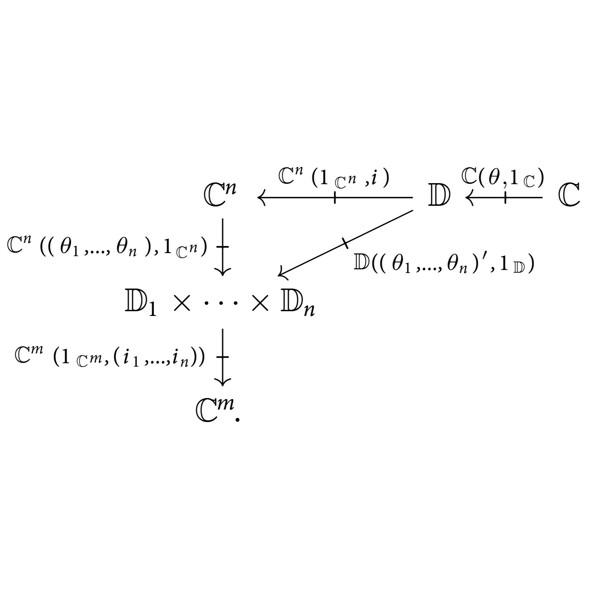
	</a>
	<p><a href="https://doi.org/10.1017/S096012952510039X" target="_blank" title="Link to MSCS"><b>Day algebras,</b></a>
	with Edmund Robinson, <i>Mathematical Structures in Computer Science,</i> Vol. 36(6) (2026).</p>
</div>

<div class="flex-container-pub">
	<a href="https://doi.org/10.60866/CAM.227" target="_blank">
	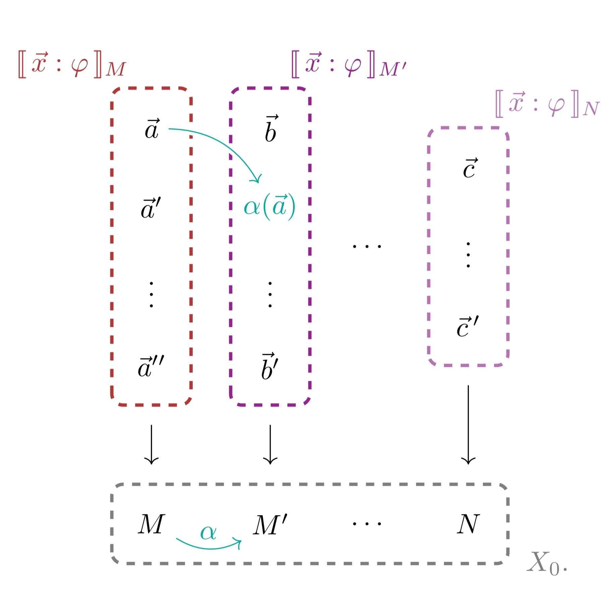
	</a>
	<p><a href="https://doi.org/10.60866/CAM.227" target="_blank" title="Link to ZML"><b>On topological groupoids that represent theories,</b></a>
	<i>Zeitschrift für Mathematische Logik und Grundlagen der Mathematik,</i> Vol. 72, pp. 1-44 (2026).</p>
</div>


<div class="flex-container-pub">
	<a href="https://doi.org/10.1016/j.jpaa.2025.108073" target="_blank">
	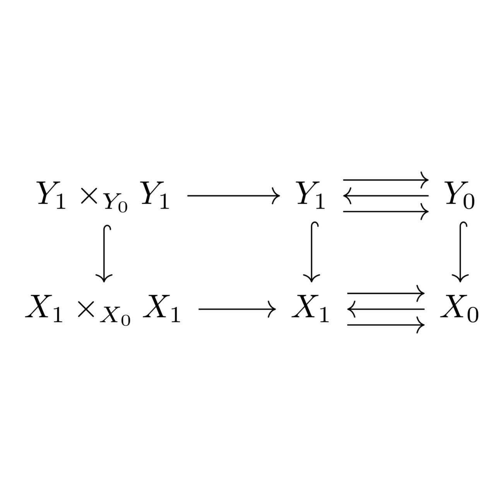
	</a>
	<p><a href="https://doi.org/10.1016/j.jpaa.2025.108073" target="_blank" title="Link to JPAA"><b>Topoi with enough points and topological groupoids,</b></a> 
	<i>Journal of Pure and Applied Algbera,</i> Vol. 229(10), 108073 (2025).</p>
</div>

<div class="flex-container-unpub">
	<a href="https://arxiv.org/abs/2507.04526" target="_blank">
	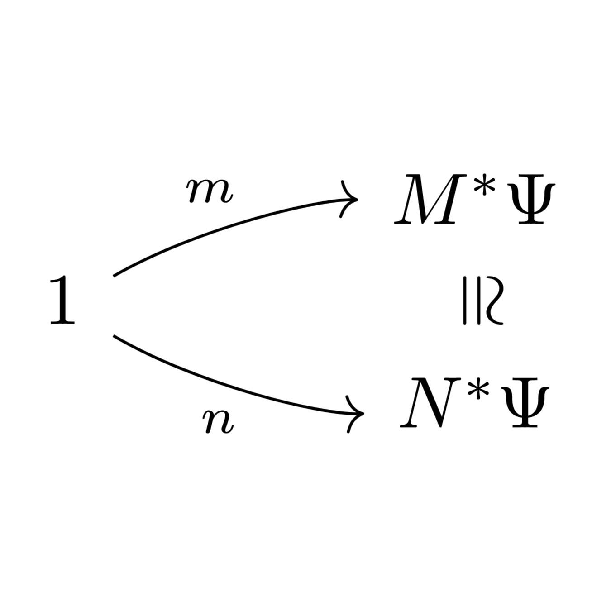
	</a>
	<p><a href="https://arxiv.org/abs/2507.04526" target="_blank" title="arXiv:2507.04526"><b>On the theories classified by an étendue,</b></a>
	Preprint (2025).</p>
</div>

<div class="flex-container-unpub">
	<a href="https://arxiv.org/abs/2506.09788" target="_blank">
	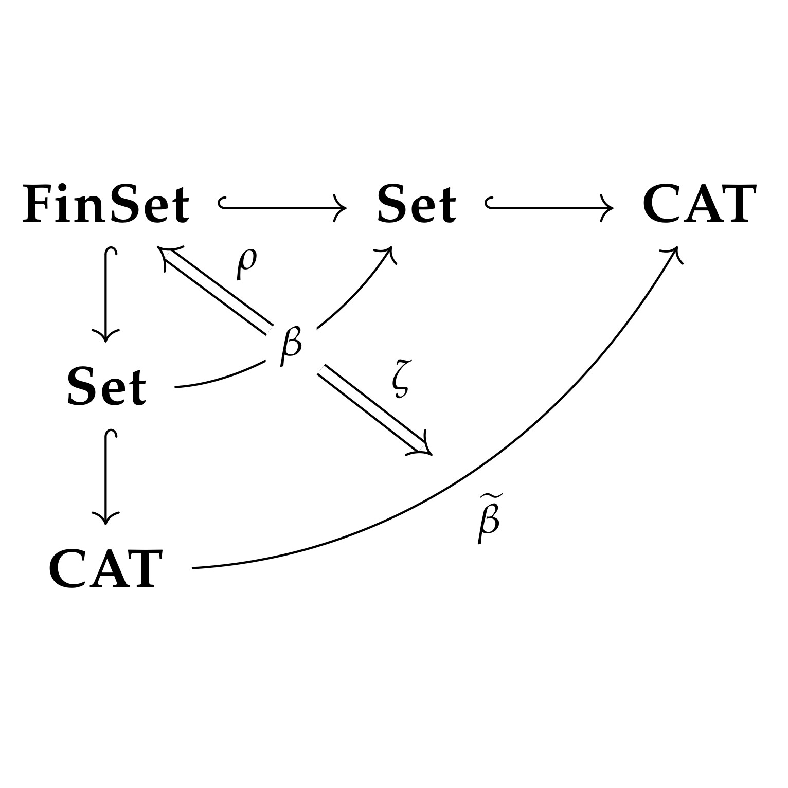
	</a>
	<p><a href="https://arxiv.org/abs/2506.09788" target="_blank" title="arXiv:2506.09788"><b>Ultracategories via Kan extensions of relative monads,</b></a>
	with Umberto Tarantino, Preprint (2025).</p>
</div>

<div class="flex-container-pub">
	<a href="https://doi.org/10.70930/tac/6xnz7nby" target="_blank">
	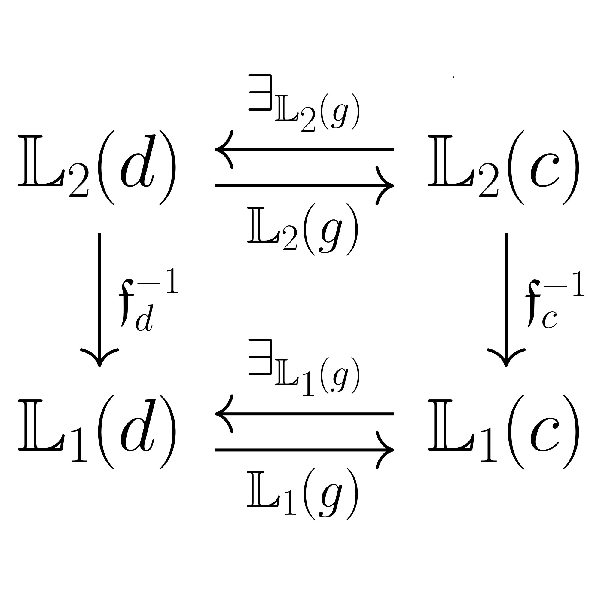
	</a>
	<p><a href="https://doi.org/10.70930/tac/6xnz7nby" target="_blank" title="Link to TAC"><b>Some properties of internal locale morphisms externalised,</b></a>
	<i>Theory and Applications of Categories</i>, Vol. 41, No. 35, pp. 1160-1202 (2024).</p>
</div>


<div class="flex-container-unpub">
	<a href="https://arxiv.org/abs/2406.02788" target="_blank">
	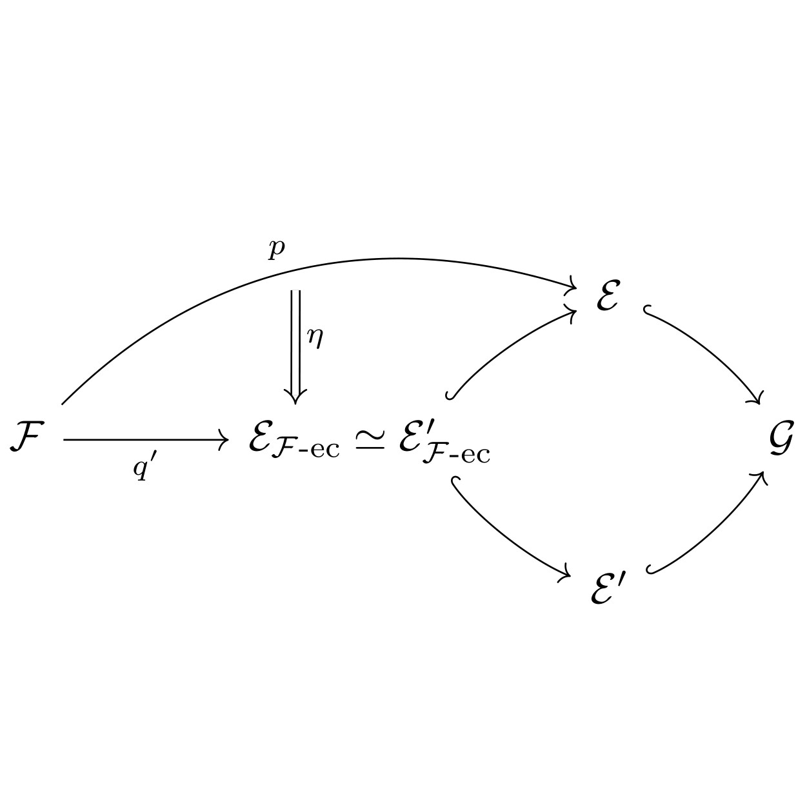
	</a>
	<p><a href="https://arxiv.org/abs/2406.02788" target="_blank" title="arXiv:2406.02788"><b>Existentially closed models and locally zero-dimensional toposes,</b></a>
	with Mark Kamsma, Preprint (2024).</p>
</div>

<div class="flex-container-pub">
	<a href="http://www.tac.mta.ca/tac/expositions/articles/2/te2abs.html" target="_blank">
	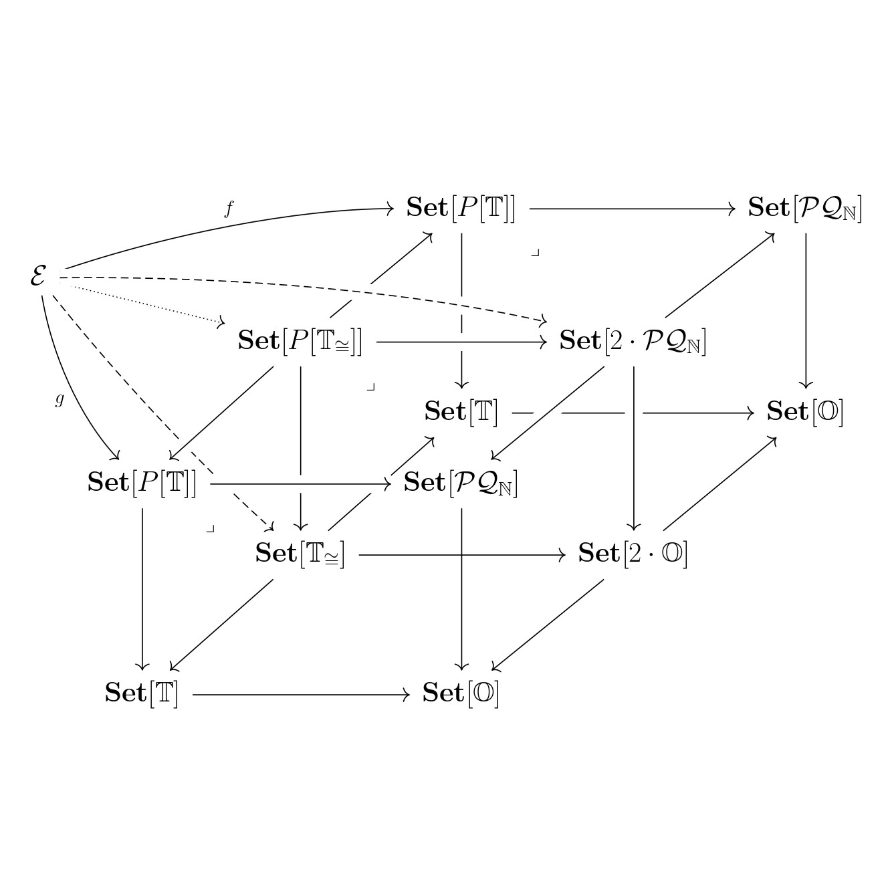
	</a>
	<p><a href="http://www.tac.mta.ca/tac/expositions/articles/2/te2abs.html" target="_blank" title="Link to TAC"><b>The representing localic groupoid for a geometric theory,</b></a>
	with Graham Manuell, <i>Expositions in Theory and Applications of Categories</i> No. 2 (2024).</p>
</div>

<div class="flex-container-phd">
	<a href="thesis/thesis_wrigley.pdf" target="_blank">
	
	</a>
	<p><a href="thesis/thesis_wrigley.pdf" target="_blank" title="My PhD thesis."><b>Doctrinal and groupoidal representations of classifying topoi,</b></a>
	PhD thesis (2024).</p>
</div>

<div class="flex-container-unpub">
	<a href="https://arxiv.org/abs/2304.07539" target="_blank">
	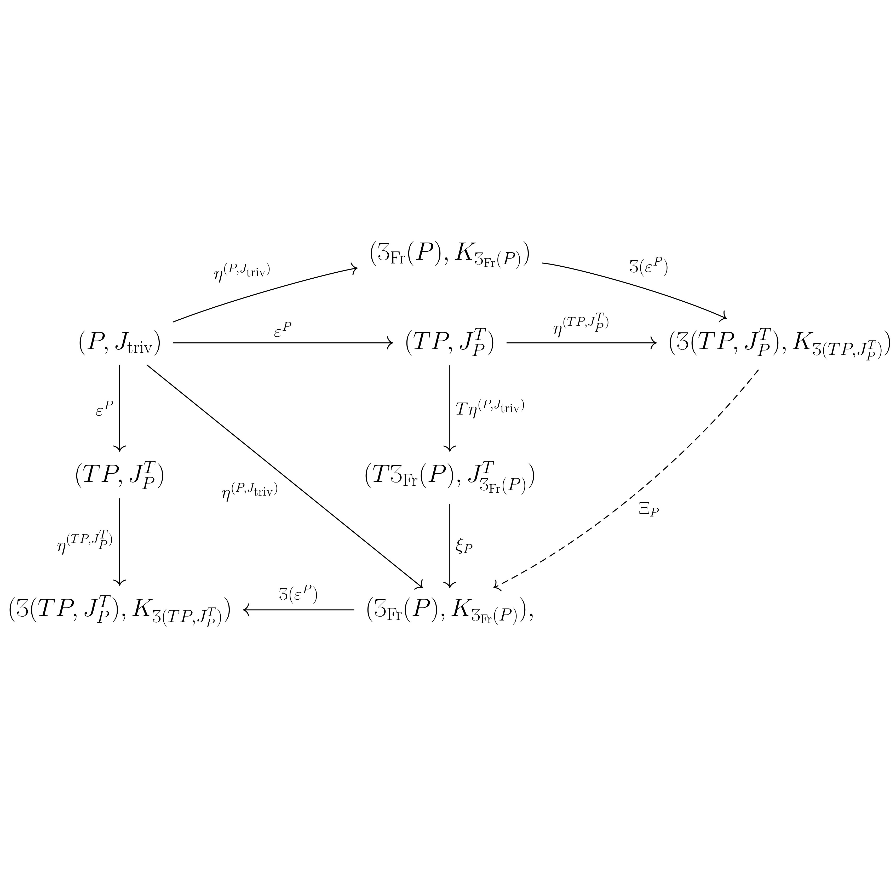
	</a>
	<p><a href="https://arxiv.org/abs/2304.07539" target="_blank" title="arXiv:2304.07539"><b>The geometric completion of a doctrine,</b></a>
	Preprint (2023).</p>
</div>

</div>

<script>
        const collapsepub = document.getElementById('collapsepub');
        // Select all elements in published class
        const pubElements = document.querySelectorAll('.flex-container-pub');

        collapsepub.addEventListener('click', () => {
	    collapsepub.classList.toggle('active');
            pubElements.forEach(element => {
                // Toggle the 'collapsed' class
                element.classList.toggle('collapsed');
            });
	
        });

        const collapseunpub = document.getElementById('collapseunpub');
        // Select all elements in unpublished class
        const unpubElements = document.querySelectorAll('.flex-container-unpub');

        collapseunpub.addEventListener('click', () => {
	    collapseunpub.classList.toggle('active');
            unpubElements.forEach(element => {
                // Toggle the 'collapsed' class
                element.classList.toggle('collapsed');
            });
        });

        const collapsephd = document.getElementById('collapsephd');
        // Select all elements in phd class
        const phdElements = document.querySelectorAll('.flex-container-phd');

        collapsephd.addEventListener('click', () => {
            collapsephd.classList.toggle('active');
	    phdElements.forEach(element => {
                // Toggle the 'collapsed' class
                element.classList.toggle('collapsed');
            });
        });
</script>


</body>
</html>